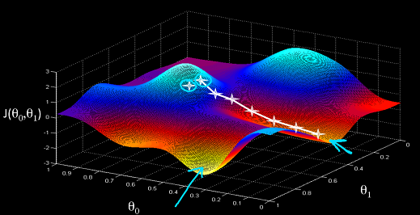

Gradient Descent is an algorithm which tries to find the global optimum of a function. Here, we are interested in finding out global minima for our neural network's cost function.

Above is an illustration of a cost function in a 3 dimensional space. Our aim is to take small steps which will take us to the global minima. But when gradient descent takes that small step it decides the direction in which to take that small step just only on the basis of gradient at that step.
As, it turns out there are a few variations of Gradient Descent we’ll find. These all differ from each other in only one regard, i.e. after how many examples the weight and bias updating is done.
Let’s look at all these methods one by one with a help of a simple analogy. Suppose that there are 100 mind-training books you want to read and then apply those ideas you got from the books to your life. Well I think there can be three simple approaches to it:
1) You read all the 100 books in one go and then try to apply what you learnt. You will not be able to remember everything you read so you’ll probably have to keep this cycle of reading all the 100 books and applying it in your life for quite some time. Let’s say after 50 such cycles you feel confident that you’ve got all the wisdom from the books. This is called Batch Gradient Descent.
2) You read one book, and apply those ideas to your life. Then you read the second book, apply those ideas to your life. You keep going like this and finish all the 100 books. This was quite simple, you read and then you apply. Because you know that you have applied most of the ideas that were in the books to your life already, you feel pretty confident that you will not need more than 5 such cycles to gain all the wisdom you possibly can from these 100 books. This is called Stochastic Gradient Descent.
3) You read ‘n’ books first, then apply the ideas from those n books to your life. Then you read next n books and apply those ideas. Similarly you keep reading next n books and keep applying those ideas to your life. This is called Mini-Batch Gradient Descent. How many times you’ll need to go through the cycle will totally depend on the value of n you choose. If you choose the value of n equal to 1, this will turn your mini batch gradient descent algorithm into Stochastic Gradient descent. If you take value of n equal to m, i.e. number of training examples, it will turn mini-batch gradient descent into Batch Gradient Descent.
Each approach has its set of advantages and disadvantages. Let's look into each one of them one by one.
Batch Gradient Descent
Advantages
The path to optimum for Batch Gradient Descent is particularly noise-free. This results in a smooth transition to the optimum.
Disadvanatges
Batch Gradient Descent provides a stable path to convergence but at a big cost. To make even a single step towards the convergence it will have to compute delta's (through backpropagation) for each and every example in the dataset. This makes Batch Descent particularly slow for large datasets.
Stochastic Gradient Descent
Advantages
The frequent updates immediately give an insight into the performance of the model and the rate of improvement. And that's probably why this variant of gradient descent is also called online machine learning algorithm.
The increased model update frequency can result in faster learning on some problems
The noisy update process can allow the model to avoid local minima (e.g. premature convergence).
Disadvantages
The frequent updates can result in a noisy gradient signal, which may cause the model parameters and in turn the model error to jump around. You can look at the above figure.
The noisy learning process down the error gradient can also make it hard for the algorithm to settle on an error minimum for the model.
Mini-Batch Gradient Descent
Advantages
Mini-Batch Gradient Descent is computationally more efficient than Batch Gradient Descent even on all the large datasets.
Mini-Batch is a general algorithm. This means we can change the value of 'n' to change the algorithm into Batch or Stochastic Gradient Descent. When Batch-Size is 1, Mini-Batch Converts into Stochastic Gradient Descent and similarly when Batch-Size is equal to 'm' i.e. is total number of training examples, Mini-Batch changes into Stochastic Gradient Descent.
The model update frequency is higher than batch gradient descent which allows for a more robust convergence, avoiding local minima.
Disadvantages
Adds another hyperparameter 'n' i.e. batch size to fiddle around with.
NOTE: When implementing Stochastic and Mini-Batch gradient descent its extremetly important that the dataset is nicely shuffled. If there isn't continuous variance throughout the dataset, you can be pretty sure that your gradient descent is not going to work properly. Though Batch Gradient Descent will continue to give similar results irrespective of the fullfilment of this requirement.
Mini-batch gradient descent is the recommended variant of gradient descent for most applications, especially in deep learning.Small values give a learning process that converges quickly at the cost of noise in the training process.Large values give a learning process that converges slowly with accurate estimates of the error gradient.
Another important result which has been found in many researches is that batch-size of 32 is generally very good for large sets.